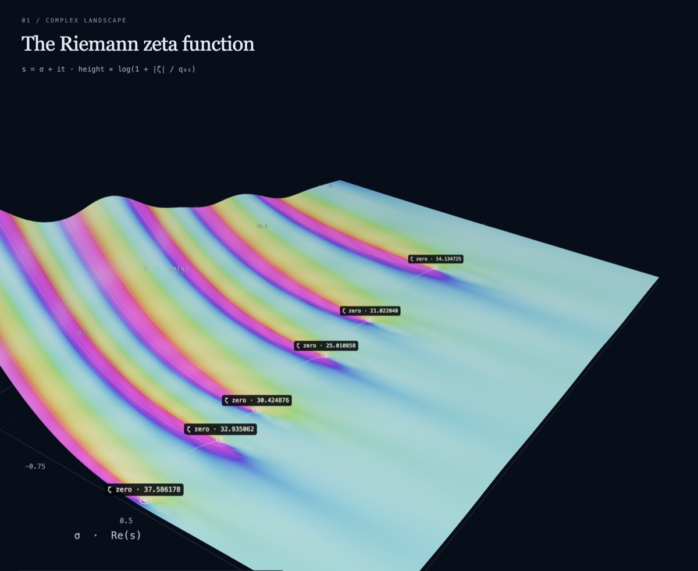
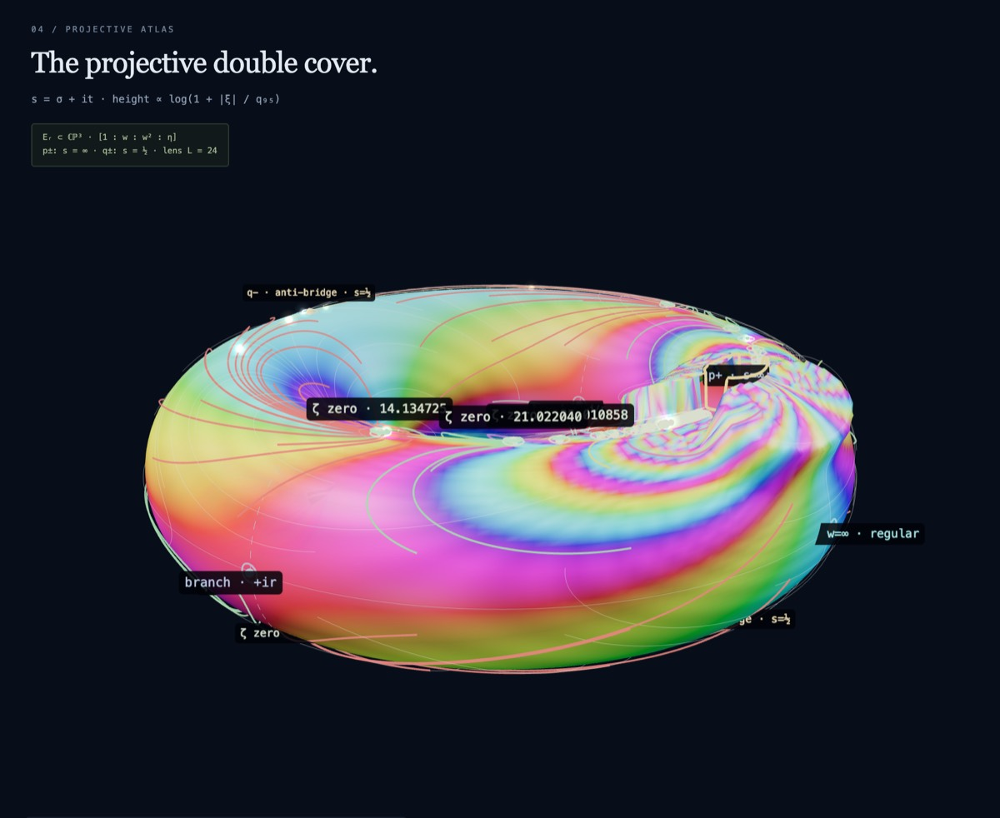

A guided introduction
The Riemann hypothesis, from the ground up.
One sentence about where a function vanishes decides how regularly the prime numbers are spread. This page builds that sentence from nothing, shows why it matters, and then says plainly what is proved, what is not, and what this site adds.
- 1 Primesschool arithmetic
- 2 Euler's productinfinite sums
- 3 Riemann's functioncomplex numbers
- 4 The hypothesiscomplex numbers
- 5 Zeros and primessome calculus
- 6 What is provedsurvey
- 7 What this site addsresearch
- 8 Where to go nextlinks
Part 1
Primes thin out, and nobody can predict the next one.
A prime is a whole number above 1 that only 1 and itself divide: 2, 3, 5, 7, 11, 13 and so on. Every whole number is a product of primes in exactly one way, so primes are the atoms of arithmetic.
Write π(x) for the number of primes up to x. (This π is a name for a counting function. It has nothing to do with circles.) The graph of π(x) is a staircase that climbs one step at each prime. The steps come at irregular places, yet from far away the staircase follows a smooth curve.
Gauss noticed in the 1790s that near a large number x, roughly one number in ln x is prime. Adding up those densities gives the logarithmic integral Li(x) = ∫2x dt / ln t. The prime number theorem, proved in 1896, says the ratio π(x) / Li(x) tends to 1.
The question behind the Riemann hypothesis is the next one: how big is the error π(x) − Li(x)?
Part 2
Euler found a formula that knows every prime at once.
For a number s > 1, add up the reciprocal powers of all whole numbers:
ζ(s) = 1 + 1/2s + 1/3s + 1/4s + …
In 1737 Euler showed the same quantity is a product with one factor for each prime:
ζ(s) = 1/(1 − 2−s) · 1/(1 − 3−s) · 1/(1 − 5−s) · 1/(1 − 7−s) · …
The reason is unique factorisation. Each factor expands as 1 + p−s + p−2s + …, and multiplying the factors out produces each whole number n−s exactly once, because n is a product of primes in exactly one way.
The left side involves no primes at all. The right side involves nothing else. Anything learned about ζ as a function is therefore a statement about primes.
Part 3
Riemann let s be a complex number.
In 1859 Riemann wrote s = σ + it, a point in the plane with horizontal coordinate σ and vertical coordinate t. The sum above only converges for σ > 1. Riemann showed that the function it defines extends in exactly one way to the whole plane, apart from a single pole at s = 1. That extension is the Riemann zeta function.
He also found a symmetry. Multiply ζ by some explicit, well-understood factors to form the completed function
ξ(s) = ½ · s(s − 1) · π−s/2 · Γ(s/2) · ζ(s).
Then
ξ(s) = ξ(1 − s).
The map s → 1 − s is a half-turn about the point s = ½. Combined with the fact that ξ takes conjugate values at conjugate points, it makes the picture a mirror image across the vertical line σ = ½. That line is called the critical line.
Part 4
The hypothesis is about where zeta is zero.
A zero is a point s with ζ(s) = 0. There are two kinds.
- The trivial zeros at s = −2, −4, −6, … are fully understood and play no further role.
- The nontrivial zeros all lie in the critical strip 0 < σ < 1. There are infinitely many, and by the symmetry above they are placed symmetrically about the critical line.
Riemann hypothesis. Every nontrivial zero of the zeta function has real part exactly ½.
Symmetry allows a zero off the line as long as its mirror image is also a zero. The hypothesis says this never happens: every zero sits on the mirror itself.
Zeros on the line can be seen with a real-valued function. Hardy's function Z(t) is ζ(½ + it) with its phase rotated away, so Z(t) is real and |Z(t)| = |ζ(½ + it)|. Each time the curve crosses the axis, zeta has a zero on the critical line.
Counting sign changes proves zeros exist on the line. It cannot by itself show that none exist off it. That needs a separate count of all zeros in the strip, and the two counts must agree.

Part 5
Each zero is a wave, and the waves add up to the primes.
The cleanest way to see it uses a weighted count. Let ψ(x) add ln p for every prime power pk ≤ x. It is a staircase like π(x), and it carries the same information. Riemann's idea, proved by von Mangoldt in 1895, is an exact formula:
ψ(x) = x − Σρ xρ/ρ − ln 2π − ½ ln(1 − x−2)
The sum runs over all nontrivial zeros ρ, taken in conjugate pairs in order of height. (At a jump, the formula gives the midpoint of the step.) The term x is the smooth trend. A zero ρ = β + iγ contributes an oscillation in ln x with frequency γ and amplitude proportional to xβ.
So the amplitude of every wave is set by the real part β of its zero. If all zeros have β = ½, every wave grows like √x and no faster. A single zero with larger real part would make a louder wave and a larger error in the prime count.
This is why the hypothesis matters. It is equivalent to the statement that the error in the prime number theorem is as small as it can be: |π(x) − Li(x)| is at most a constant times √x · ln x (von Koch, 1901).
Part 6
What has actually been proved.
The hypothesis is open. These are the main established facts around it. Each is a theorem unless marked otherwise.
- No zeros on the edge
- Hadamard and de la Vallée Poussin (1896) proved that no zero has σ = 1. This is what proves the prime number theorem. No one has proved that zeros avoid any strip σ > 1 − c for a fixed c > 0.
- Many zeros on the line
- Hardy (1914): infinitely many. Selberg (1942): a positive proportion. Levinson (1974): more than a third. Conrey (1989): more than two fifths. Pratt, Robles, Zaharescu and Zeindler (2020): slightly over five twelfths.
- Checked by computer
- Platt and Trudgian (2021): every zero with height 0 < t ≤ 3·1012 lies on the line. A finite check of this kind can never settle the infinite statement.
- Few zeros far from the line
- Zero-density estimates bound how many zeros could have σ above a given value. Guth and Maynard (2024) proved N(σ, T) ≤ T30(1−σ)/13 + o(1), improving the classical bounds of Ingham and Huxley for σ near ¾.
- The heat-flow form
- Deform ξ by a heat flow with time τ. There is a constant Λ, the de Bruijn–Newman constant, such that every zero of the deformed function lies on the critical line exactly when τ ≥ Λ. The hypothesis is equivalent to Λ ≤ 0. Rodgers and Tao (2018) proved Λ ≥ 0, so the hypothesis is now equivalent to Λ = 0. From above, Polymath 15 (2019) proved Λ ≤ 0.22, and Platt and Trudgian's verification lowers this to Λ ≤ 0.2.
- Statistics of the zeros (conjecture and numerics)
- Montgomery (1973) conjectured, and Odlyzko's computations support, that the spacings between zeros match those of eigenvalues of large random Hermitian matrices. This suggests the zeros are the spectrum of some operator, an idea going back to Hilbert and Pólya. No such operator has been found.
Part 7
What this site adds.
Status. Nothing on this site proves the Riemann hypothesis. Every claim below carries its own grade: theorem, machine-checked certificate, numerical evidence, or open.
The Observatory: zeta on surfaces
The Observatory computes ζ, ξ and the heat-flow family in your browser and draws them on several surfaces: the plane, the sphere, a torus, a projective double cover, a Klein bottle and an annulus. Compactifying the plane brings the point at infinity and the symmetry s → 1 − s into view as geometry.

Zero traps: a small rigorous statement
Take a disc centred on the critical line. The mirror symmetry maps it to itself, so zeros of ξ inside it come in mirror pairs unless they lie on the line. Hence:
Trap lemma. If such a disc contains exactly one zero, that zero is on the critical line and is simple.
The count "exactly one" is the part that needs proof. The Observatory ships an interval-arithmetic certificate, computed with the Arb library, that each of the 1517 zeros with height below 2000 sits alone in its own disc, and that the strip contains no other zeros up to that height. It is a finite, machine-checked statement. It has not been formalised in a proof assistant, and it says nothing above height 2000. Method and scope.
Heat flow you can watch
The heat-flow family from Part 6 is one of the Observatory's three functions. Move the time τ and the zeros move with it. The viewer also draws fall lines: paths along which the size of the function only decreases, ending at zeros, coloured by the zero they reach.
The research programme
The rest of this site is an open research programme on the de Bruijn–Newman constant and on direct routes to the hypothesis. It includes candidate bounds on Λ that are not yet refereed, no-go theorems showing which kinds of argument cannot work, and results checked in the Lean proof assistant. Its own status page separates what is established from what is not. What we know · Map of approaches.
Part 8
Where to go next.
Further reading: H. M. Edwards, Riemann's Zeta Function; E. C. Titchmarsh, The Theory of the Riemann Zeta-Function; E. Bombieri's problem description for the Clay Mathematics Institute.